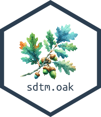
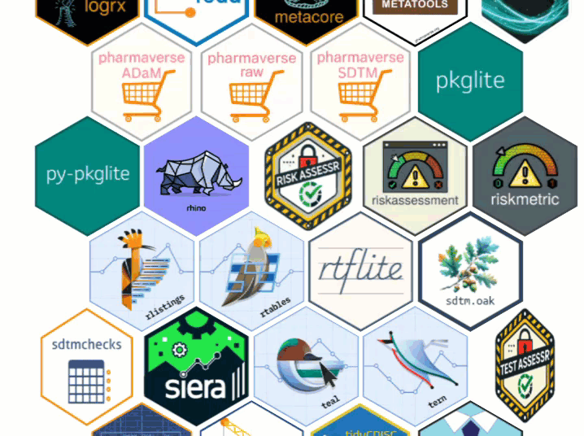
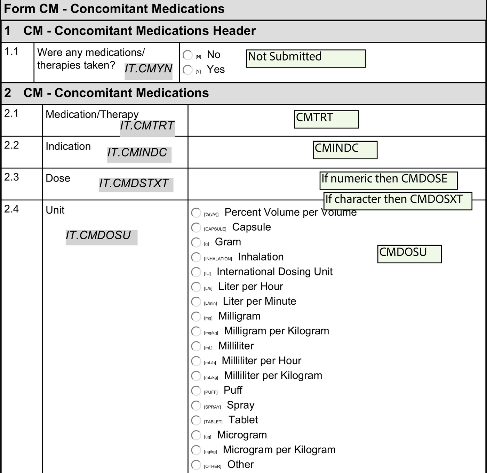
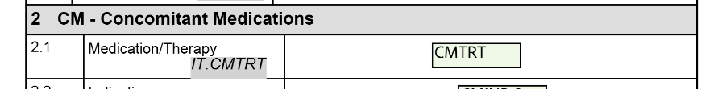
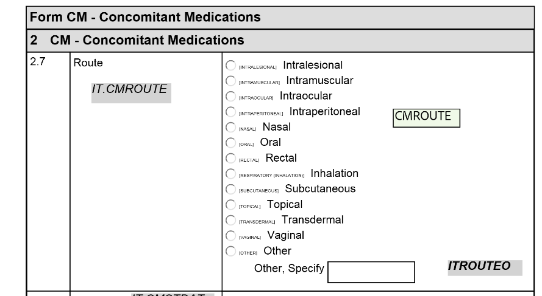

CDISC SDTM datasets in R
Pharmaverse Workshop

Magdalena Krochmal
posit::conf(2026)

Objectives
By the end of this session you will:
🧩 Understand How sdtm.oak and its reusable algorithms work
⚙️ Build The SDTM CM domain with live code
🤖 Accelerate The same mappings with an AI agent + skill
Agenda
📦 Intro to sdtm.oak 20 min
💊 CM domain 🤖 15 min
✏️ Exercise 🤖 10 min
Introduction to sdtm.oak
sdtm.oak in pharmaverse
- Sponsored by CDISC COSA, pharmaceutical companies, including Roche, Pfizer, GSK, Vertex, Atorus Research, Pattern Institute, Transition Technologies Science.
- Inspired by the Roche’s
roakpackage. - Addresses a critical gap in the pharmaverse suite by enabling study programmers to create SDTM datasets in R, complementing the existing capabilities for ADaM, TLGs, eSubmission, etc.

Challenges in SDTM Programming
SDTM maps from raw data — so the challenges come from the source. sdtm.oak (on CRAN) is designed to meet each one:
🔌 EDC agnostic
Raw data structure varies — different EDC systems use different dataset names, variable names, and structures.
📐 Standards agnostic
Collection standards vary — even with CDASH, sponsors build different eCRFs; proprietary standards are common.
🧩 Modular
Mapping is repetitive — composable algorithms build any domain from the same building blocks.
The EDC landscape
Sponsors and CROs collect raw data in many different systems — each with its own data model, export format, and naming conventions.
Medidata Rave Oracle InForm Veeva CDMS IBM Clinical OpenClinica REDCap paper-to-EDC vendor labs
They differ in three ways that matter for mapping:
🏷️ Names
Different variable & dataset names (SYS_BP vs IT.SYSBP), plus vendor metadata columns.
📐 Shape
Wide (one column per test) vs long (one row per test).
🔤 Values
Collected terms vary (Sit vs SITTING, mm Hg vs mmHg).
🔌 sdtm.oak doesn’t care which system produced the raw data.
Same data, many raw shapes — 🏷️ eCRF
How it’s collected — dedicated fields vs a generic grid.
🗄️ Medidata Rave — dedicated fields
Systolic BP 120 mmHg
Position SITTING
One field per test, unit fixed on the form
🗄️ Oracle InForm — generic grid
| Test | Result | Unit |
|---|---|---|
| SYSBP | 120 | mmHg |
| DIABP | 80 | mmHg |
Test name is data, not a column
Same data, many raw shapes — 📐 Raw table
What the programmer receives — wide vs long.
🗄️ Rave — wide
| SUBJ | SYS_BP | DIA_BP | POS |
|---|---|---|---|
| 1015 | 120 | 80 | SIT |
Each test is its own column
🗄️ InForm — long
| SUBJ | VSTESTCD | VSORRES |
|---|---|---|
| 1015 | SYSBP | 120 |
| 1015 | DIABP | 80 |
Each test is its own row
Same data, many raw shapes — 🔤 Standards
What’s stored — CDASH-aligned vs proprietary terms.
✅ CDASH-aligned
| Variable | Collected |
|---|---|
| VSPOS | SITTING |
| VSORRESU | mmHg |
Terms already close to CDISC CT
🏢 Proprietary
| Variable | Collected |
|---|---|
| POSITION | Sit |
| UNIT | mm Hg |
Free-text-ish values → need CT mapping
🔑 Same algorithms map all of these — only raw_var / raw_dat change, and assign_ct() + a CT spec reconcile the values (Sit, SITTING → SITTING).
Real raw data: pharmaverseraw::vs_raw
The workshop data mimics a real EDC export — note the vendor-specific names:
🏷️ Item prefixes IT. prefix, mixed styles: SYS_BP vs IT.TEMP
📄 Vendor columns INSTANCE, FORM, VTLD — not SDTM, EDC metadata
🎯 Your job Map these → VS.VSTESTCD, VSORRES, VSORRESU, VSTPT…
sdtm.oak
The SDTM concept
SDTM organizes everything as observations about subjects — each observation is a row, described by variables.
🧍 Subject → 👀 Observation → 📊 Row of variables
“Subject 101 had mild nausea starting on study day 6.”
Identifier 101
Topic NAUSEA
Timing Study day 6
Qualifier MILD
Every variable has a role
A variable’s role determines what it tells you about the observation.
🆔 Identifier Study, subject, domain, sequence number
🎯 Topic The focus of the observation (e.g. the lab test)
🕒 Timing When it happened (start / end dates)
🏷️ Qualifier Extra detail: results, units, descriptors
⚙️ Rule Start / end / branch / loop in Trial Design
Qualifiers carry most of the detail — they split into 5 kinds:
Grouping --CAT, --SCAT
Result --ORRES, --STRESC
Synonym --DECOD, --TEST
Record AGE, SEX, --BLFL
Variable --ORRESU, --DOSU
📦 A domain = related observations with a common topic, one dataset with a 2-char code prefixing its variables — e.g. VS (Vital Signs: VSTESTCD, VSORRES) and AE (Adverse Events: AETERM, AESEV).
Reusable algorithms are the backbone
📥Collected source data 🧩Mapping algorithms 📦Target SDTM model
Modular building blocks — reusable across domains, each one an R function you compose to map any domain.
| Algorithm | What it does | Example |
|---|---|---|
assign_no_ct() |
One-to-one map, no controlled terminology | AE.AETERM |
assign_ct() |
One-to-one map with controlled terminology | VS.VSPOS |
assign_datetime() |
Map dates/times to ISO 8601 (handles unknowns) | AE.AEENDTC |
hardcode_ct() |
Hardcode a value with controlled terminology | VS.VSORRESU = 'mmHg' |
hardcode_no_ct() |
Hardcode a value, no controlled terminology | VS.VSCAT = 'VITAL SIGNS' |
condition_add() |
Apply a mapping only when a condition holds | VSMETHOD when VSTESTCD = 'TEMP' |
oak_cal_ref_dates() |
Derive DM reference dates | DM.RFSTDTC |
📎 Full descriptions for each algorithm are in the appendix at the end.
Build a mapping, one algorithm at a time
vs_raw <- pharmaverseraw::vs_raw |>
generate_oak_id_vars(pat_var = "PATNUM", raw_src = "vitals")
vs <-
# Topic: which test is this row?
hardcode_ct(
raw_dat = vs_raw, raw_var = "SYS_BP",
tgt_var = "VSTESTCD", tgt_val = "SYSBP",
ct_spec = study_ct, ct_clst = "C66741"
) |>
dplyr::filter(!is.na(VSTESTCD))
vs |> dplyr::select(patient_number, VSTESTCD) |> head(4)# A tibble: 4 × 2
patient_number VSTESTCD
<chr> <chr>
1 701-1015 SYSBP
2 701-1015 SYSBP
3 701-1015 SYSBP
4 701-1015 SYSBP 🎯 Start with the topic — hardcode_ct() says “these rows are systolic BP”.
Build a mapping, one algorithm at a time
vs_raw <- pharmaverseraw::vs_raw |>
generate_oak_id_vars(pat_var = "PATNUM", raw_src = "vitals")
vs <-
# Topic: which test is this row?
hardcode_ct(
raw_dat = vs_raw, raw_var = "SYS_BP",
tgt_var = "VSTESTCD", tgt_val = "SYSBP",
ct_spec = study_ct, ct_clst = "C66741"
) |>
dplyr::filter(!is.na(VSTESTCD)) |>
# Result qualifier: the collected value
assign_no_ct(
raw_dat = vs_raw, raw_var = "SYS_BP",
tgt_var = "VSORRES", id_vars = oak_id_vars()
)
vs |> dplyr::select(patient_number, VSTESTCD, VSORRES) |> head(4)# A tibble: 4 × 3
patient_number VSTESTCD VSORRES
<chr> <chr> <chr>
1 701-1015 SYSBP 131
2 701-1015 SYSBP 129
3 701-1015 SYSBP 147
4 701-1015 SYSBP 138 🏷️ Add a qualifier — assign_no_ct() copies the collected result into VSORRES.
Build a mapping, one algorithm at a time
vs_raw <- pharmaverseraw::vs_raw |>
generate_oak_id_vars(pat_var = "PATNUM", raw_src = "vitals")
vs <-
# Topic: which test is this row?
hardcode_ct(
raw_dat = vs_raw, raw_var = "SYS_BP",
tgt_var = "VSTESTCD", tgt_val = "SYSBP",
ct_spec = study_ct, ct_clst = "C66741"
) |>
dplyr::filter(!is.na(VSTESTCD)) |>
# Result qualifier: the collected value
assign_no_ct(
raw_dat = vs_raw, raw_var = "SYS_BP",
tgt_var = "VSORRES", id_vars = oak_id_vars()
) |>
# Variable qualifier: the unit
hardcode_ct(
raw_dat = vs_raw, raw_var = "SYS_BP",
tgt_var = "VSORRESU", tgt_val = "mmHg",
ct_spec = study_ct, ct_clst = "C66770",
id_vars = oak_id_vars()
)
vs |> dplyr::select(patient_number, VSTESTCD, VSORRES, VSORRESU) |> head(4)# A tibble: 4 × 4
patient_number VSTESTCD VSORRES VSORRESU
<chr> <chr> <chr> <chr>
1 701-1015 SYSBP 131 mmHg
2 701-1015 SYSBP 129 mmHg
3 701-1015 SYSBP 147 mmHg
4 701-1015 SYSBP 138 mmHg 🔁 Same pattern, one algorithm per variable — chain as many as the domain needs.
Algorithms vs. plain dplyr
One sdtm.oak call does what several dplyr steps would.
🧰 plain dplyr
⚡ Mapping, controlled terminology, conditions, and oak id linkage collapse into one call.
oak id vars — the linkage key
Raw data is long: each collected item is a column. sdtm.oak needs to know which SDTM record each qualifier belongs to.
Raw row patient 701-1015 row 5 source vitals
🔑
oak id vars patient_number oak_id raw_source
→
SDTM records VSTESTCD = SYSBP VSORRES = 131 VSORRESU = mmHg
🔗 patient_number + oak_id (raw row) + raw_source uniquely tie every qualifier back to its topic — and the SDTM record back to the raw dataset.
Programming steps
1–2 📥 Read raw datasets & create oak id vars
4–6 🎯 Map topic, map the rest, repeat per topic var
Human-in-the-loop
AI drafts the repetitive parts; you own correctness.
- 1 🧠 Skill encodes how your team maps SDTM
- 2 🤖 Agent reads specs → drafts
sdtm.oakcode - 3 👀 You review: right algorithm? right CT? edge cases?
- 4 ▶️ Run and check the domain
- 5 ♻️ Refine the skill so the next domain is even faster
⚠️ Generated code is a starting point, not a submission. Validation, CT correctness, and traceability remain your responsibility.
Workshop - Create CM domain
How we will “code” today
- Hand-code a few CM variables together — one algorithm per line, discussing each argument and reading it straight off the aCRF.
- See the four core algorithms on real fields:
assign_no_ct,assign_ct,hardcode_ct+condition_add,assign_datetime. - Then hand the rest to an AI agent + skill and stay the reviewer.
Review specs
We map the CM (Concomitant Medications) domain from CDASH raw data.
- aCRF: CM_cdash_acrf.pdf
- Raw data:
cm_raw_data_cdash.csv(item-levelIT.<NAME>columns) - Controlled terminology:
study_ct(frommetadata/sdtm_ct.csv)

Annotated CM aCRF — each field’s annotation names the target SDTM variable (and CT codelist)
Four algorithms, one per field
Each collected field maps with the algorithm that fits how it was captured — the aCRF annotation tells you which one:
✍️
assign_no_ct Collected free text passes straight through — e.g. the medication name.
🏷️
assign_ct A coded field (dropdown) mapped to a CT codelist — e.g. route of administration.
⚙️
hardcode_ct + condition_add Write a constant CT value, but only for rows meeting a condition — e.g. flag “Ongoing”.
📅
assign_datetime Parse a collected date/time into ISO 8601 — e.g. the start date.
assign_no_ct — collected free text
CMTRT — the medication name, typed by the site. No controlled terminology.

💡 Free-text values pass straight through — use assign_no_ct. The first algorithm in a topic pipe seeds the frame, so it takes no id_vars.
assign_ct — collected + controlled terminology
CMROUTE — route of administration, a dropdown. Apply CT codelist C66729.

🏷️ A coded/dropdown field needs assign_ct — it maps the collected value to the CT term for codelist ct_clst.
hardcode_ct + condition_add — conditional constant
Use hardcode_ct when the SDTM value isn’t collected as-is — you assign a fixed constant that is subject to controlled terminology. Unlike assign_ct (which maps whatever the site entered), hardcode_ct writes the same tgt_val to every targeted row and validates it against the codelist.
CMENRTPT — set to the constant "Ongoing" only when “Is medication ongoing?” is Yes.
cm_enrtpt <- hardcode_ct(
raw_dat = condition_add(cm_raw, IT.CMONGO == "Yes"), # filter: only ongoing rows
raw_var = "IT.CMONGO",
tgt_var = "CMENRTPT",
tgt_val = "Ongoing", # the constant written to every filtered row
ct_spec = study_ct,
ct_clst = "C66728", # codelist that "Ongoing" must belong to
id_vars = oak_id_vars()
)⚙️ condition_add() filters the raw rows first; hardcode_ct then writes the constant tgt_val to those rows and checks it against ct_clst. Drop condition_add() to hardcode for all rows (e.g. CMCAT = "GENERAL").
assign_datetime — a collected date
CMSTDTC — start date, collected as d-mmm-yy. Convert to ISO 8601.
📅 assign_datetime parses the collected format (raw_fmt) and handles unknown tokens (raw_unk), producing an ISO 8601 date like 2020-09-17.
The pre-prepared skill
A checked-in skill teaches the agent our sdtm.oak conventions:
🧠 .agents/skills/sdtm-oak-mapping/SKILL.md
# SDTM mapping with sdtm.oak
Use when: creating an SDTM domain from a raw dataset + aCRF.
Pick the algorithm per variable, reading the aCRF annotation:
- collected free text ....... assign_no_ct()
- collected + CT codelist ... assign_ct(ct_spec, ct_clst)
- conditional constant ...... hardcode_ct() wrapped in condition_add()
- a collected date .......... assign_datetime(raw_fmt)
Chain topic then qualifiers with |>, id_vars = oak_id_vars().
Conventions: raw vars use IT.<NAME>; CT lives in study_ct.Let AI draft the rest
We coded four fields by hand. The remaining CM variables follow the same patterns — delegate them.
💬 Your prompt
“Using the sdtm-oak-mapping skill and the annotated CM aCRF, map the remaining CM variables — CMINDC, CMDOS, CMDOSTXT, CMDOSU, CMDOSFRM, CMDOSFRQ, CMENTPT, CMENDTC — choosing the right algorithm per field and applying CT where the aCRF shows a codelist.”
# Agent output, following the skill:
# CMDOSU is a coded unit -> assign_ct with codelist C71620
cm_dosu <- assign_ct(
raw_dat = cm_raw, raw_var = "IT.CMDOSU",
tgt_var = "CMDOSU", ct_spec = study_ct,
ct_clst = "C71620", id_vars = oak_id_vars()
)
# CMDOS is the numeric dose -> assign_no_ct, only when numeric
cm_dos <- assign_no_ct(
raw_dat = condition_add(
cm_raw,
grepl("^-?\\d*(\\.\\d+)?$", cm_raw$IT.CMDSTXT)),
raw_var = "IT.CMDSTXT", tgt_var = "CMDOS",
id_vars = oak_id_vars()
)🧑⚖️ You review each mapping against the aCRF — right algorithm, right CT codelist, right condition — then run and check the result.
Bonus: reference dates with oak_cal_ref_dates
Some variables aren’t a single collected field — they’re a min/max date across eCRFs. oak_cal_ref_dates() (used for DM’s RFXSTDTC, and study-day derivation here) reads a small config table:
# One config row per reference date; then one call derives it
ref_date_conf_df <- tibble::tribble(
~raw_dataset_name, ~date_var, ~time_var, ~dformat, ~tformat, ~sdtm_var_name,
"ex_raw", "IT.ECSTDAT", NA_character_, "dd-mmm-yyyy", NA_character_, "RFXSTDTC"
)
dm <- oak_cal_ref_dates(
dm_domain = dm,
der_var = "RFXSTDTC",
min_max = "min",
ref_date_config_df = ref_date_conf_df,
raw_source = list(ex_raw = ex_raw)
)🔑 One config row + one call per reference date. Add rows and let the agent extend the config — you verify source, format, and min vs max.
Check-in Exercise
Open exercises/02-SDTM.R — finish the CM domain. It follows three phases:
- ✍️ Walkthrough — by hand. We code the different algorithms together (CMTRT, CMROUTE, CMSTDTC, CMENRTPT).
- 🤖 Walkthrough — with AI. We map one variable (CMINDC) by prompting the agent, then reviewing its output.
- 🧑💻 Your turn — 7 exercises. You complete the rest, coding by hand or with the agent. Each has the aCRF annotation and a suggested prompt.
The AI walkthrough step (phase 2) looks like this:
# === WALKTHROUGH (with AI): CMINDC ======================================
# Prompt (agent uses the sdtm-oak-mapping skill + the annotated CM aCRF):
# "Add a pipe step that maps CMINDC from raw_var IT.CMINDC. It is
# collected free text with no controlled terminology, so use
# assign_no_ct with id_vars = oak_id_vars()."
# The agent produced this — I reviewed it against the aCRF and kept it:
assign_no_ct(
raw_dat = cm_raw,
raw_var = "IT.CMINDC",
tgt_var = "CMINDC",
id_vars = oak_id_vars()
)Add the “completed” sticky note to your laptop when complete.
Exercise Solution
Full solution in exercises/answers/02-SDTM-answer.R. The exercise steps:
# CMINDC — free text
assign_no_ct(cm_raw, "IT.CMINDC", tgt_var = "CMINDC",
id_vars = oak_id_vars()) |>
# CMDOS / CMDOSTXT — numeric vs text dose (condition_add)
assign_no_ct(condition_add(cm_raw, grepl("^-?\\d*(\\.\\d+)?$", cm_raw$IT.CMDSTXT)),
"IT.CMDSTXT", tgt_var = "CMDOS", id_vars = oak_id_vars()) |>
assign_no_ct(condition_add(cm_raw, grepl("[^0-9eE.-]", cm_raw$IT.CMDSTXT)),
"IT.CMDSTXT", tgt_var = "CMDOSTXT", id_vars = oak_id_vars()) |>
# CMDOSU / CMDOSFRM / CMDOSFRQ — coded qualifiers (assign_ct + codelist)
assign_ct(cm_raw, "IT.CMDOSU", tgt_var = "CMDOSU", ct_spec = study_ct,
ct_clst = "C71620", id_vars = oak_id_vars()) |>
assign_ct(cm_raw, "IT.CMDOSFRM", tgt_var = "CMDOSFRM", ct_spec = study_ct,
ct_clst = "C66726", id_vars = oak_id_vars()) |>
assign_ct(cm_raw, "IT.CMDOSFRQ", tgt_var = "CMDOSFRQ", ct_spec = study_ct,
ct_clst = "C71113", id_vars = oak_id_vars()) |>
# CMENTPT — hardcoded constant when ongoing (hardcode_no_ct)
hardcode_no_ct(condition_add(cm_raw, IT.CMONGO == "Yes"), "IT.CMONGO",
tgt_var = "CMENTPT", tgt_val = "DATE OF LAST ASSESSMENT",
id_vars = oak_id_vars()) |>
# CMENDTC — end date
assign_datetime(cm_raw, "IT.CMENDAT", tgt_var = "CMENDTC",
raw_fmt = c("d-m-y"), raw_unk = c("UN", "UNK"))Wrap-up & resources
✅
What you can build Most SDTM domains today. Not yet: Trial Design, SV, SE, RELREC, Associated Persons.
🤝
Get involved 💬 Slack · 🐙 GitHub · 📖 CDISC Wiki
📚
Learn more 📄 Docs · 🧩 Examples · ▶️ Video · 📝 Blog · 📊 Poster
Acknowledgements
The sdtm.oak package is the work of many contributors:
Rammprasad Ganapathy Lead Author
Adam Forys Author
Edgar Manukyan Author
Rosemary Li Author
Preetesh Parikh Author
Lisa Houterloot Author
Yogesh Gupta Author
Omar Garcia Author
Ramiro Magno Author
Kamil Sijko Author
Shiyu Chen Author
Thank you
Appendix — Algorithm Reference
assign_no_ct
| Algorithm or Function | Description of the Algorithm | Example SDTM mapping |
|---|---|---|
| One-to-one mapping between the raw source and a target SDTM variable that has no controlled terminology restrictions. Just a simple assignment statement. | MH.MHTERM AE.AETERM |
assign_ct
| Algorithm or Function | Description of the Algorithm | Example SDTM mapping |
|---|---|---|
| One-to-one mapping between the raw source and a target SDTM variable that is subject to controlled terminology restrictions. A simple assign statement and applying controlled terminology. This will be used only if the SDTM variable has an associated controlled terminology. | VS.VSPOS VS.VSLAT |
assign_datetime
| Algorithm or Function | Description of the Algorithm | Example SDTM mapping |
|---|---|---|
| One-to-one mapping between the raw source and a target that involves mapping a Date or time or datetime component. This mapping algorithm also takes care of handling unknown dates and converting them into. ISO8601 format. | MH.MHSTDTC AE.AEENDTC |
hardcode_ct
| Algorithm or Function | Description of the Algorithm | Example SDTM mapping |
|---|---|---|
| Mapping a hardcoded value to a target SDTM variable that is subject to terminology restrictions. This will be used only if the SDTM variable has an associated controlled terminology. | MH.MHPRESP = ‘Y’ VS.VSORRESU = ‘mmHg’ |
hardcode_no_ct
| Algorithm or Function | Description of the Algorithm | Example SDTM mapping |
|---|---|---|
| Mapping a hardcoded value to a target SDTM variable that has no terminology restrictions. | CM.CMTRT = ‘FLUIDS’ VS.VSCAT = ‘VITAL SIGNS’ |
condition_add
| Algorithm or Function | Description of the Algorithm | Example SDTM mapping |
|---|---|---|
| Algorithm that is used to filter the source data and/or target domain based on a condition. The mapping will be applied only if the condition is met. This algorithm has to be used in conjunction with other algorithms, that is if the condition is met perform the mapping using algorithms like assign_ct, assign_no_ct, hardcode_ct, hardcode_no_ct, assign_datetime. | If MDPRIOR == 1 then CM.CMSTRTPT = ‘BEFORE’. VS.VSMETHOD when VSTESTCD = ‘TEMP’ |
oak_cal_ref_dates
| Algorithm or Function | Description of the Algorithm | Example SDTM mapping |
|---|---|---|
| Derivation of Reference dates in the DM domain | DM.RFSTDTC DM.RFPENDTC |